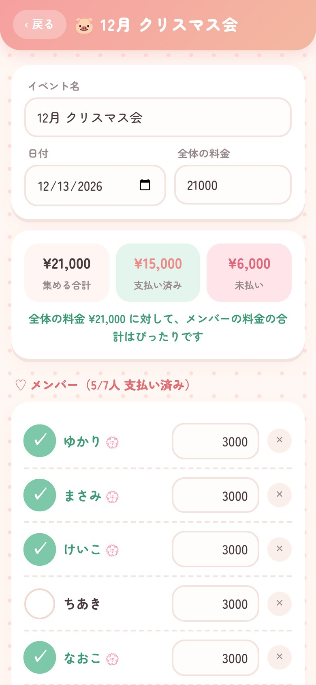
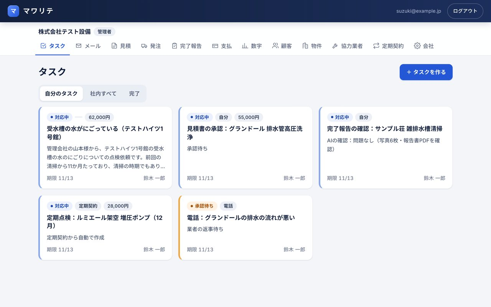

SUN'SCREATE ／ サンズクリエイト
現場を知る人が、
現場を知る人が、
ちょうどいい仕組みをつくる。
建物の設備管理を10年以上。点検や清掃の現場で「ここがもっと楽になれば」を見てきた経験から、個人のかたのアプリと、事業者さまの業務システムをつくっています。
個人のかたへ
 アプリのしたてやを見る
事業者さまへ
業務システムを見る
管理会社・オーナーさまへ
アプリのしたてやを見る
事業者さまへ
業務システムを見る
管理会社・オーナーさまへ
アプリのしたてや
家計・習いごと・サークルの集金など。あなた専用のスマホアプリを仕立てます。
はじめ1,500円・月300円から

業務システム制作
予約・現場の記録・報告書・見積や請求。電話とメモと手作業の仕事を、スマホとパソコンの仕組みに。
触れる試作まで無料

建物の設備管理
排水管の洗浄、貯水槽の清掃・点検、増圧ポンプ、空調の点検・清掃をお引き受けしています。
一都三県は自社で直接対応
設備管理を見る
10年以上建物の設備管理の経験
有資格貯水槽清掃作業監督者
公開中自社アプリ「その場レポ」
インボイス適格請求書発行事業者
作る人が、使う人の
仕事を知っていること。
点検の報告書づくり、管理会社さんとのメールのやりとり、協力業者さんとの日程合わせ。設備管理の仕事をしながら、毎日の「手間」を自分で仕組みにしてきました。
だから、作るのは「多機能なもの」ではなく、毎日開いて、迷わず使えるもの。まず触れる試作をお見せして、使い心地を確かめてもらってから仕上げます。
FACILITY ／ 設備管理
建物の設備の点検・清掃
マンション・ビルの管理会社さま、オーナーさまからのご依頼をお引き受けしています。作業のあとは、写真つきの報告書をすぐにお送りします。
排水管の洗浄高圧洗浄で、詰まりや臭いを防ぎます。
貯水槽の清掃・点検貯水槽清掃作業監督者が担当します。
増圧ポンプの点検給水を止めないための定期点検です。
空調設備の点検・清掃フロン点検（簡易点検・定期点検）にも対応します。
- 東京・神奈川・埼玉・千葉（一都三県）は、自社で直接うかがいます。
- そのほかの地域も、地元の協力業者と組んでお引き受けします。
メールで相談するsunscreate@scky.fun ／ お見積りは無料です
ABOUT
Sun'sCreate について
- 屋号
- Sun'sCreate（サンズクリエイト）
- 代表
- 山田 和矢
- 所在地
- 〒154-0004 東京都世田谷区太子堂4丁目18番15号 TASUKI PRIME SANGENJAYA 3F-3
- メール
- sunscreate@scky.fun
- 事業
- アプリ制作（アプリのしたてや）／業務システム・Webアプリ・ホームページ制作／建物の設備管理（排水管洗浄・貯水槽清掃・増圧ポンプ点検・空調設備の点検清掃）
- 登録など
- 適格請求書発行事業者（インボイス）／貯水槽清掃作業監督者